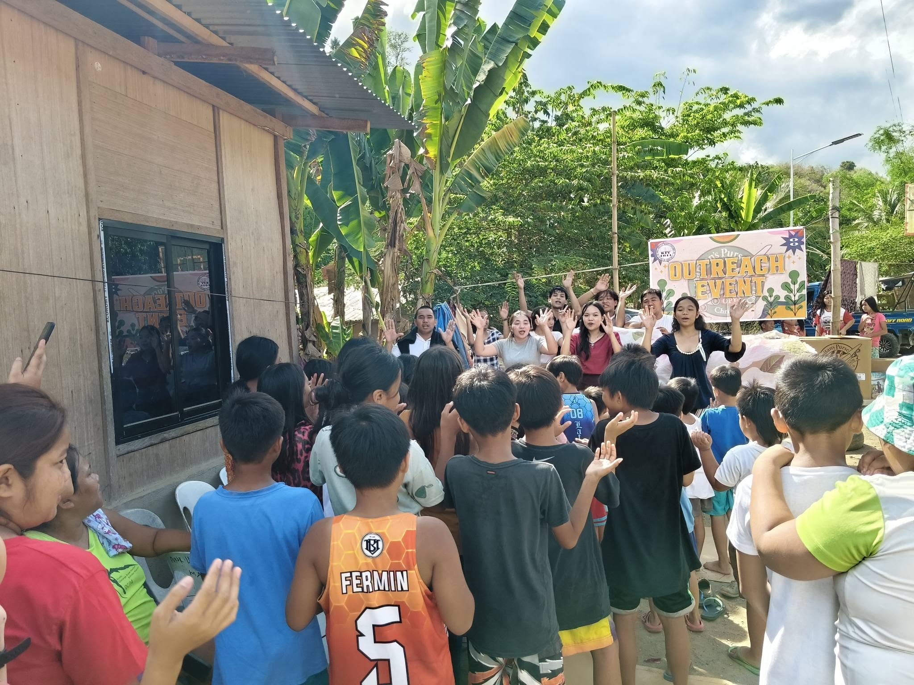
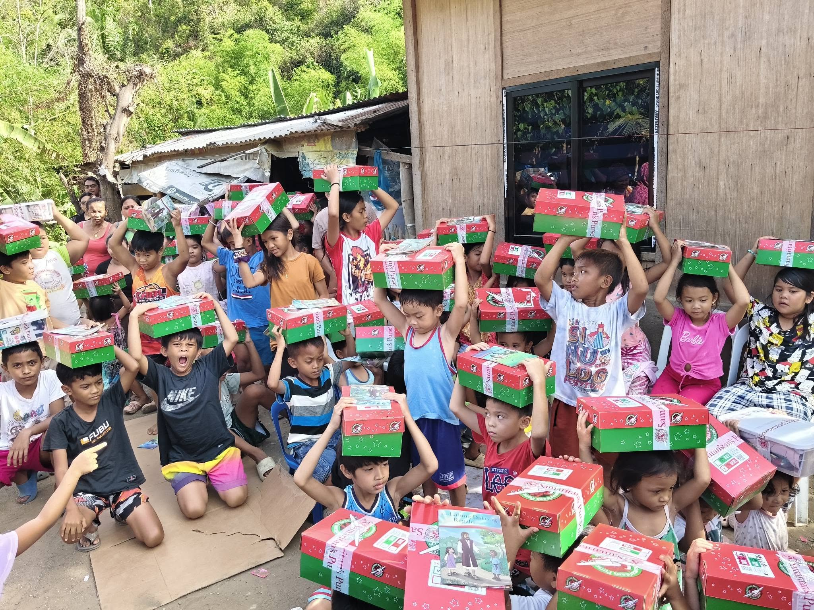

Featured Devotional
Walking Faithfully in the Word
A devotional reminder that Christian growth begins with a heart that listens to the Word of God and obeys it daily.
Read MoreRead devotionals, sermon notes, Bible studies, testimonies, event recaps, and ministry news.
A devotional reminder that Christian growth begins with a heart that listens to the Word of God and obeys it daily.
Read More
A reflection on why prayer must remain central in worship, family life, and ministry.
Read More
A short recap of community visitation, Gospel sharing, and practical service.
Read More
Celebrating joyful learning, Scripture memory, and the faithfulness of volunteers.
Read MoreA sermon note outline about the completeness of Christ’s work for salvation.
Read More
A biblical reminder about faith, leadership, love, and family devotion.
Read More
Encouragement for ministry workers to serve faithfully and quietly before the Lord.
Read More